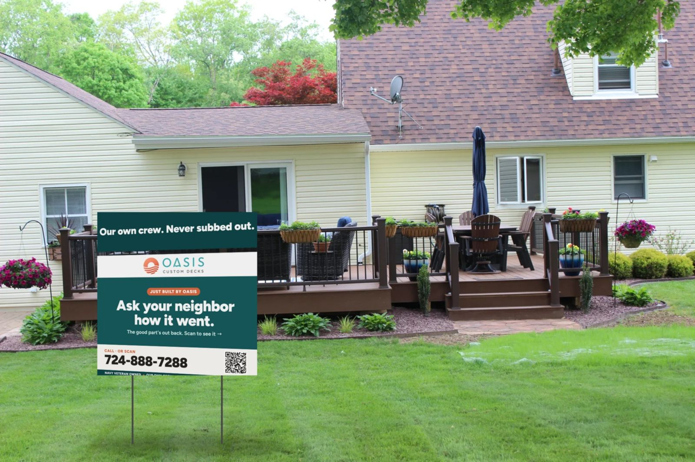
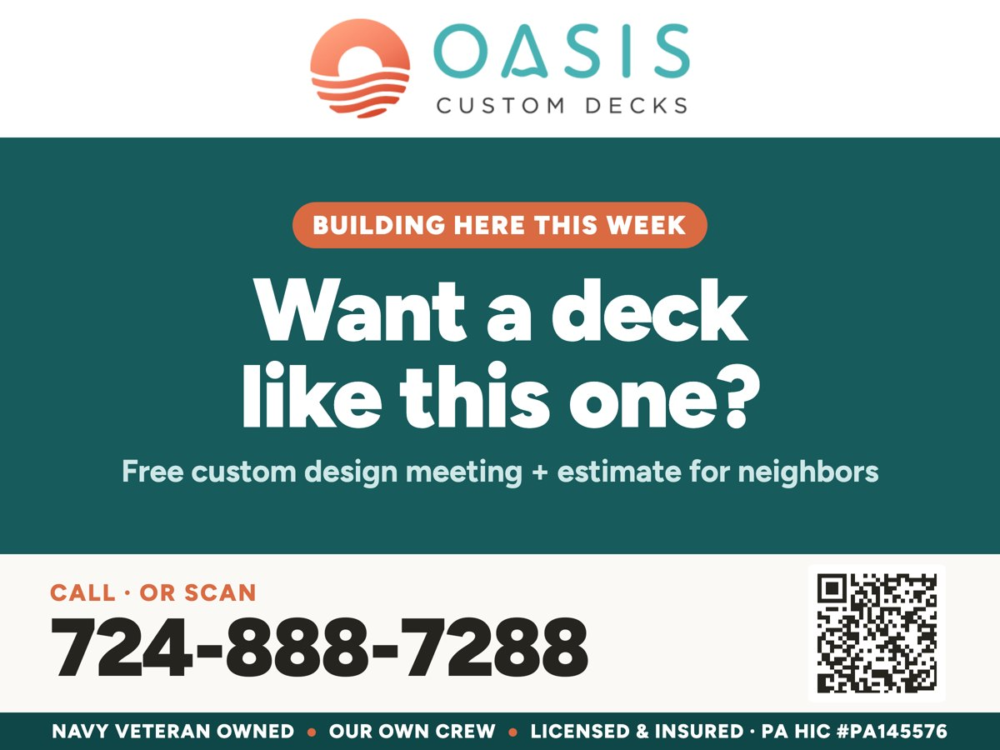
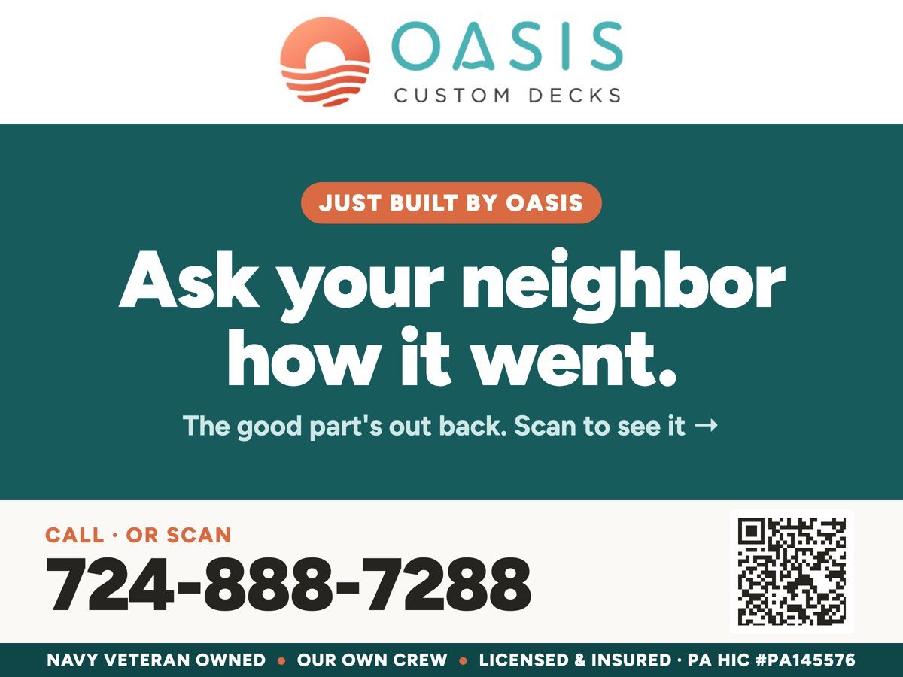
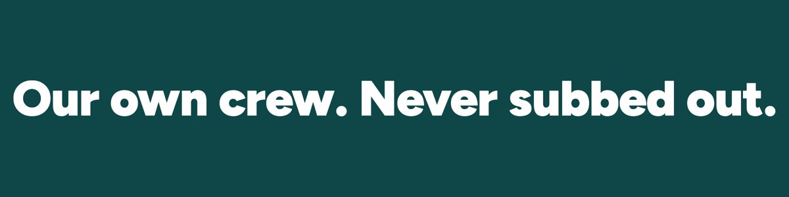
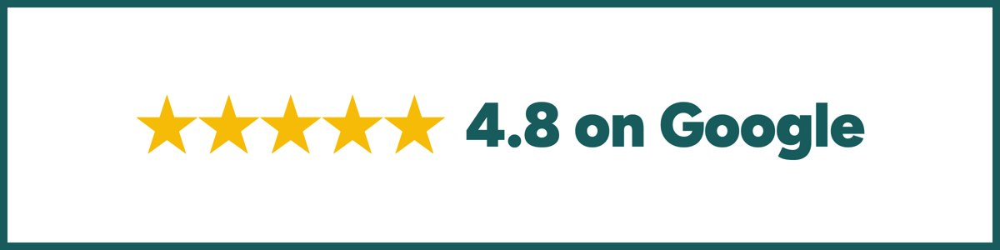
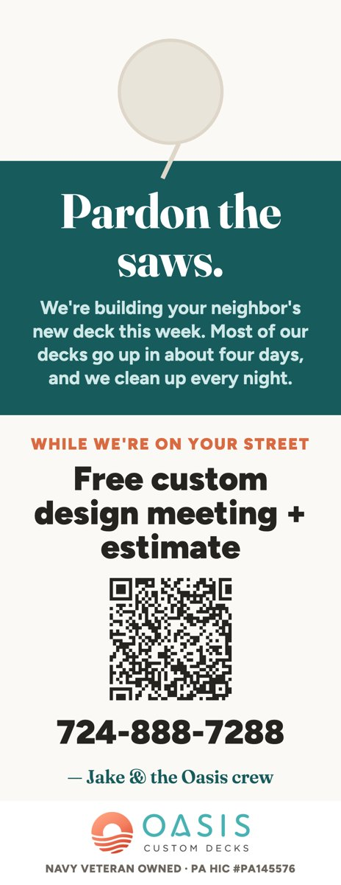
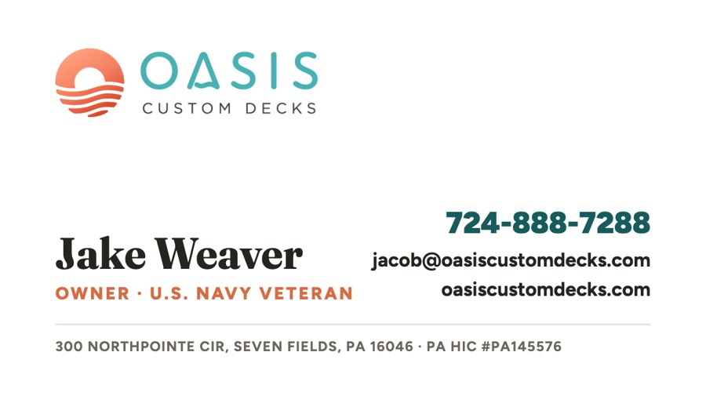
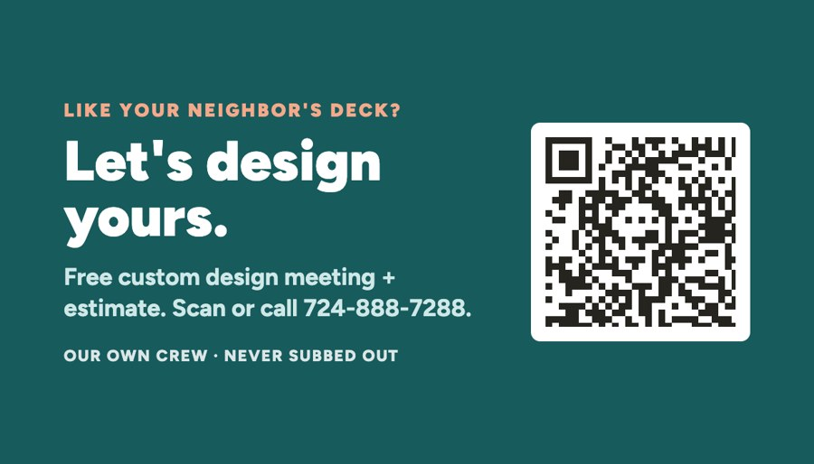
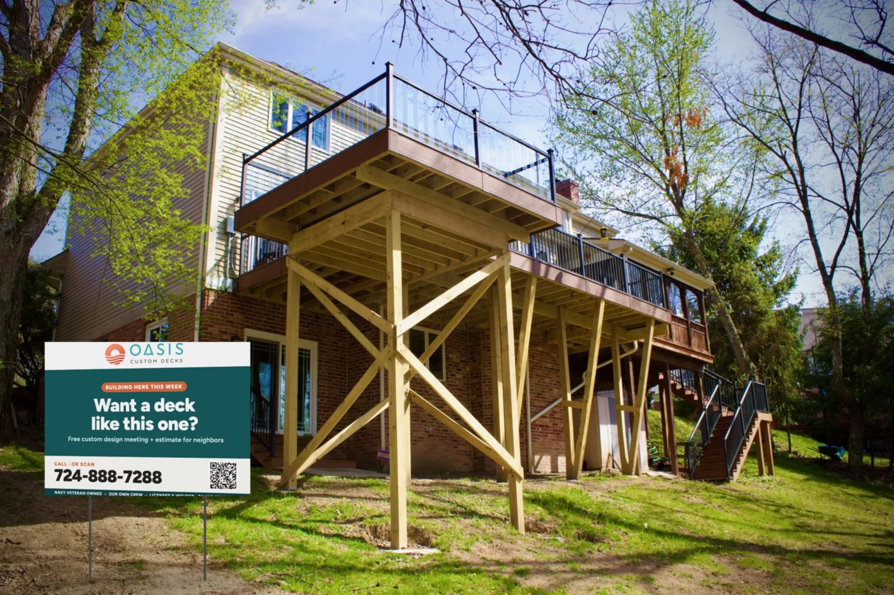
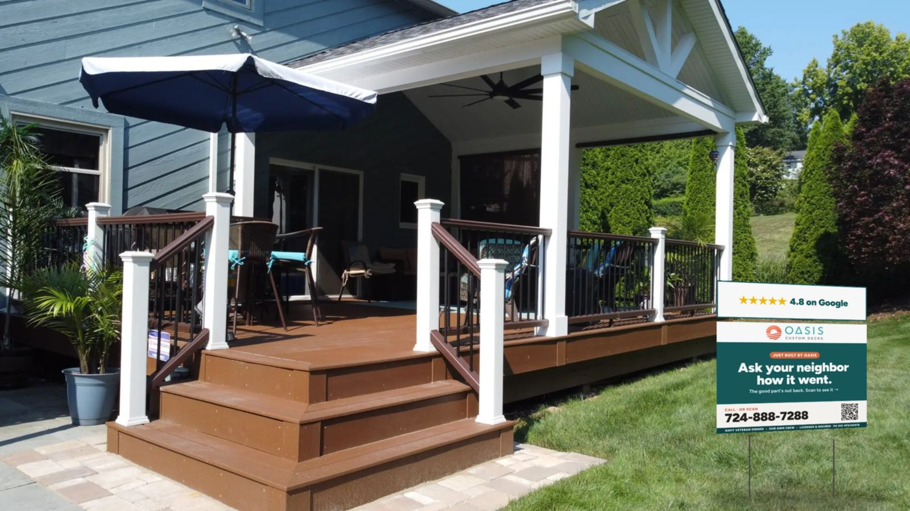

Two yard signs, three riders, a door hanger and a business card. They turn each Oasis job site into booked custom design meetings with the neighbors. Built from Oasis's confirmed facts only.

Look at the numbers. Meta in-area CPL went from $50 to $112 in 30 days. 43 of the last 65 survey leads were out of area.
That's an M1 problem in the 6M framework: market. The ads are reaching the wrong people.
A yard sign has a 100% in-area hit rate. Everyone who sees it lives on a street Oasis already builds on.
Same house values. Same HOA. Same lot shape. Same neighbor who just watched a $50K deck go up in four days.
Core Four says your cheapest lead is the one a happy customer hands you. The sign is how the customer hands it over without lifting a finger.
Don't overthink the design. One headline. One offer. One phone number. Make it readable from a car.
| Input | Number | Source |
|---|---|---|
| Average job | ≈ $50,000 | Jake's estimate, 5 Oct 2026 |
| Jobs won, Mar–Oct 2026 | 30 (≈ 45 / yr pace) | CRM, 21 Oct CMO report |
| Booked meeting → won | ≈ 9% | 330 meetings → 30 won |
| Kit cost per job | ≈ $35 | 2 signs + rider + 20 hangers, estimate |
| Kit cost per year | ≈ $1,600 | 45 jobs × $35 |
| Breakeven | 1 job | One win ≈ 31× a year of signs |
| Booked meetings needed for one win | ≈ 11 / yr | At the ad close rate. Neighbor leads should close higher. |
That's one booked neighbor meeting for every four jobs. Print prices are estimates until a print shop quotes them.
| Lever | What the sign does |
|---|---|
| Dream outcome ↑ | "Want a deck like this one?" The proof is standing in the yard. It costs nothing to imagine it in their own yard. |
| Likelihood ↑ | "Ask your neighbor how it went." The strongest proof is a person they can walk over and ask. Navy veteran owned, our own crew, licensed + insured. |
| Time delay ↓ | "Building here this week." Real urgency: the crew is already on the street. No fake countdowns. |
| Effort ↓ | A 10-second QR scan or one phone number. The offer is the custom design meeting + free estimate, not a bare "free estimate". |

ReadyGoes in on day one and comes out on the last day.
Curiosity plus real urgency. The neighbors watch it go up all week.

Needs homeowner yesGoes in on the last day and stays up 30 days.
Most decks are out back, where the street can't see them. The QR shows the finished deck. If the homeowner doesn't want neighbors asking, swap the headline to "Just built. The good part's out back."

ReadyJake confirmed "never subbed out" on 20 Oct. This is the default rider.

Verify before printThe 31 reviews scraped 15 Oct average 4.84. Check the live Google rating on print day.
Jake's yesReal seasonal pressure for winter jobs, but only if spring slots really are filling. Never fake scarcity.

Name checkThe crew hangs it on the 20 nearest doors on day one. A sign works on drive-bys. The hanger reaches the neighbors who hear the saws.
The apology for the noise opens it, the design meeting offer closes it. It's warm outreach that reads as a courtesy note.
Signed "Jake & the Oasis crew". Jacob or Jake on bylines is still an open question in the business file.


Name checkThe front is Jake's card. The back is the neighbor offer, so any crew member can hand it to a neighbor who walks over to ask about the build.
The card has its own QR code (?s=card), so card scans show up separately from sign and hanger scans.
The "Jake" vs "Jacob" question is the same as on the hanger. The card keeps the main number, 724-888-7288, because it's Jake's real line.


oasiscustomdecks.com/neighbor/?s=<job>. That page doesn't exist yet and needs building. It shows that street's project photos plus the design meeting booking calendar. The mock QRs point there now.Spencer builds the carts with the final files. Jake gets a proof and a pay link, then approves and pays. Prices are estimates from vendor pages read on 4 Nov, so confirm them in the cart.
| What | Buy from | Why there |
|---|---|---|
| Signs A + B, riders, H-stakes | YardSignPlus primary | Its published file spec matches our files (150 DPI at size, 0.125 in bleed, PNG). It sends a free digital proof in about an hour, offers "See design, pay later", saves designs for reorders, takes 1–5 business days door to door, and ships free over $50. |
| Same items, faster | Signs.com backup | Next-business-day production, free shipping over $99. Riders are under Real Estate Riders, 24 × 6 coroplast. That page showed "out of stock" on 4 Nov. |
| Rush, a job starts tomorrow | The UPS Store, Cranberry Twp | 20436 Rte 19, Ste 620 · (724) 772-6250. Does corrugated H-stake yard signs. Walk in with the files. |
| Business cards | GotPrint | Same cart as the hangers. 3.5 × 2 in, 16 pt matte, full color both sides. 0.125 in bleed, 350 DPI, our file's spec. Roughly $25–$55 for 500, from secondhand price reports. Confirm in the cart. |
| Door hangers | GotPrint | Stocks the 4.25 × 11 size on 14 pt gloss with High Gloss UV. Choose "Full Color Front, Blank Back". It takes 0.125 in bleed at 350 DPI, our file's spec. |
| Item | Qty | Estimate |
|---|---|---|
| Signs A + B, 24 × 18, 4 mm coroplast, double-sided, same art both sides, with H-stakes | 10 + 10 | $400 – $700 |
| Rider R1, 24 × 6, double-sided | 10 | $150 – $350 |
| Door hangers, 4.25 × 11, 14 pt gloss UV | 500 | $100 – $310 |
| Business cards, 3.5 × 2, 16 pt matte | 500 | $25 – $55 |
| Total | ≈ $675 – $1,415 |
These are drafts. They get re-exported with the final copy and the tracking number before anyone orders.
Not on the sign on purpose: no neighbor discount and no referral fee. Both are Tier 2 promises. They need Jake's yes and a line in his contract before any copy says them. They're worth testing in round 2 if round 1 is slow.
Also check: HOA and township sign rules in Cranberry, Seven Fields and Mars. Most allow contractor signs during active work, and some limit how long they stay up afterward.
Send Jake the five questions today. When he says yes, build the YardSignPlus order with pay-later so all he does is approve the proof and pay. Stake the first sign on the next job that starts.